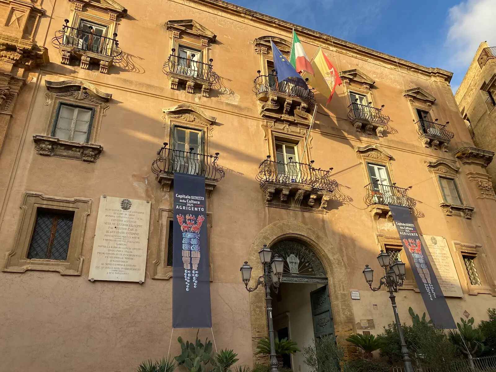

Piazza Pirandello ad Agrigento rappresenta il cuore civile della città alta, snodo cruciale tra l'antico tracciato medievale e la modernità. Situata su uno sperone roccioso che domina la Valle dei Templi, la piazza è intitolata al celebre drammaturgo agrigentino e funge da terrazza monumentale sulla storia della città. Il suo aspetto attuale è il risultato di secoli di stratificazioni, dove le strutture conventuali del XII secolo sono state trasformate in sedi istituzionali, creando uno spazio raccolto ed elegante che testimonia il passaggio dal potere religioso a quello laico.

Cosa Visitare

Palazzo dei Giganti: antico convento domenicano oggi sede del Comune,
che ospita un raffinato chiostro interno.

Teatro Luigi Pirandello: splendido teatro ottocentesco con interni riccamente
decorati, simbolo della cultura cittadina.

Basilica dell'Immacolata: imponente chiesa trecentesca nota per i suoi interni
barocchi e la facciata che domina l'accesso alla piazza.